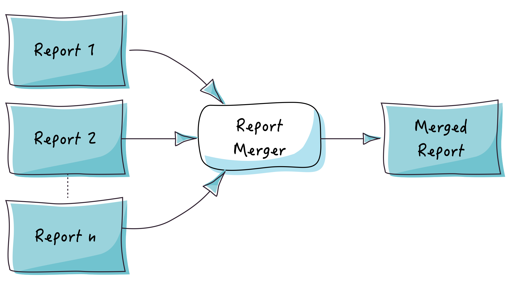

User Guide
This guide will walk you step-by-step through Easy Batch APIs and will help you to understand how to use them efficiently.
1. The batch engine
1.1 Creating a batch engine
Creating a batch engine is straightforward and can be done through the EngineBuilder API:
Engine engine = new EngineBuilder().build();The engine builder API is the main entry point to configure and create batch engine instances.
1.2 Running the batch engine
Once you have created a batch engine instance, you can run it simply as follows:
engine.call();1.3 Enabling strict mode
Easy Batch strict mode is a parameter that allows you to abort execution on first error (mapping, validating or processing exception). To enable strict mode, you can use the following snippet:
Engine engine = new EngineBuilder()
.strictMode(true)
.build();Strict mode is disabled by default.
1.4 Enabling silent mode
Easy Batch silent mode is a parameter that allows you to mute all loggers. To enable silent mode, you can use the following snippet:
Engine engine = new EngineBuilder()
.silentMode(true)
.build();Silent mode is disabled by default.
1.5 Enabling JMX monitoring
Easy Batch allows you to monitor job execution and progress at runtime using JMX.
The JMX MBean named org.easybatch.core.jmx:type=EasyBatchMonitorMBean
exposes the following attributes:
- The batch start and end times
- The data source being processed
- The total number of records to process
- The total number of filtered, ignored, rejected, error and successfully processed records
- The current record being processed
- And the execution progress
In order to register this JMX MBean at application's startup, you should enable it using the following API:
Engine engine = new EngineBuilder()
.enableJMX(true)
.build();You can then use any standard JMX compliant tool such as VisualVM to visualize monitoring attributes.
JMX monitoring is disabled by default. You can find a complete tutorial about this feature in the JMX tutorial.
2. The Record abstraction
Easy Batch streams data record by record from the data source. Depending on the data source type, a record can be a line in a flat file, a tag in a XML file, a row in a database table, a file in a folder, etc.
Here are some examples of records as seen by Easy Batch:
The generic Record interface is an abstraction of all record types:
public interface Record<P> {
/**
* Return the header of the record.
* @return the record's header.
*/
Header getHeader();
/**
* Return the payload of the record.
* @return the record's payload.
*/
P getPayload();
}A record has a header and a payload. The record header contains various metadata about the record such as the data source from which
the record has been read, its physical number, etc.. The record payload is the raw content of the record which is generic since its depends on
the data source type.
There are several implementations of the Record interface provided by Easy Batch to represent different type of records:

Note that the record payload can be of any type, so that it can represent any type of input data (textual or not).
2. Reading records
To read records from a data source, you should register an implementation of the RecordReader interface:
Engine engine = new EngineBuilder()
.reader(new MyRecordReader(myDataSource))
.build();Easy Batch comes with built-in record readers that allow you to read records from a variety of data sources:

These readers allow you to read data form:
- flat files (delimited and fixed length)
- xml and json files
- in-memory strings
- databases
- JMS queues
- Lists and Queues of objects
- and standard input
2.1 Reading data from flat files
The FlatFileRecordReader allows you to read records from a flat file.
First you need to add the easybatch-flatfile module to your dependencies:
<dependency>
<groupId>org.easybatch</groupId>
<artifactId>easybatch-flatfile</artifactId>
<version>3.0.0</version>
</dependency>Then, you can register the FlatFileRecordReader using the EngineBuilder:
Engine engine = new EngineBuilder()
.reader(new FlatFileRecordReader(myFlatFile))
.build();The FlatFileRecordReader produces StringRecord instances with a string representation of the record as payload.
2.2 Reading data from xml files
The XmlRecordReader allows you to read records from a xml file. It uses the
Stax API behind the scene to stream records one by one.
Let's consider the following tweets.xml file:
<?xml version="1.0" encoding="UTF-8"?>
<tweets>
<tweet>
<id>1</id>
<user>foo</user>
<message>Hello</message>
</tweet>
<tweet>
<id>2</id>
<user>bar</user>
<message>Hi!</message>
</tweet>
</tweets>For Easy Batch the first record is:
<tweet>
<id>1</id>
<user>foo</user>
<message>Hello</message>
</tweet>The second record is:
<tweet>
<id>2</id>
<user>bar</user>
<message>Hi!</message>
</tweet>and so on.. To use the XmlRecordReader, first you need to add the easybatch-xml module to your dependencies:
<dependency>
<groupId>org.easybatch</groupId>
<artifactId>easybatch-xml</artifactId>
<version>3.0.0</version>
</dependency>Then, you can register it with the EngineBuilder:
Engine engine = new EngineBuilder()
.reader(new XmlRecordReader("tweet", new FileInputStream("tweets.xml")))
.build();You should specify the xml element name and the input xml file.
The XmlRecordReader produces XmlRecord instances with a string representation of the record as payload.
Hint: if your XML file in flattened (with no wrapping tweets tag), let's say in this format:
<tweet><id>1</id><user>foo</user><message>Hello</message></tweet>
<tweet><id>2</id><user>bar</user><message>Hi</message></tweet>
...
<tweet><id>1000</id><user>baz</user><message>Yep</message></tweet>
you can use the FlatFileRecordReader that will read XML records line by line.
2.3 Reading data from Json files
The JsonRecordReader allows you to read records from a Json file. It uses the
JSON-P API behind the scene to stream records one by one.
Let's consider the following tweets.json file:
[
{
"id": 1,
"user": "foo",
"message": "Hello"
},
{
"id": 2,
"user": "bar",
"message": "Hi!"
}
]For Easy Batch the first record is:
{
"id": 1,
"user": "foo",
"message": "Hello"
}The second record is:
{
"id": 2,
"user": "bar",
"message": "Hi!"
}and so on.. To use the JsonRecordReader, first you need to add the easybatch-json module to your dependencies:
<dependency>
<groupId>org.easybatch</groupId>
<artifactId>easybatch-json</artifactId>
<version>3.0.0</version>
</dependency>Then, you can register it with the EngineBuilder:
Engine engine = new EngineBuilder()
.reader(new JsonRecordReader("tweets.json"))
.build();You should specify the input json file at construction time.
The JsonRecordReader produces JsonRecord instances with a string representation of the record as payload.
Heads up!: The JsonRecordReader expects an array of JSON objects in the input file: [ {object1}, {object2}, ..., {objectN} ] .
if your JSON file in flattened (no wrapping array), let's say in this format:
{object1}
{object2}
...
{objectN}
you can use the FlatFileRecordReader that will read JSON records line by line.
2.4 Reading data from a database
2.4.1. Reading data using the JDBC API
The JdbcRecordReader allows you to read records from a database using the
JDBC API.
To use the JDBC record reader, first you need to add the easybatch-jdbc module to your dependencies:
<dependency>
<groupId>org.easybatch</groupId>
<artifactId>easybatch-jdbc</artifactId>
<version>3.0.0</version>
</dependency>Then, you can register it with the EngineBuilder:
Engine engine = new EngineBuilder()
.reader(new JdbcRecordReader(myDatabaseConnection, myQuery))
.build(); When you create a JdbcRecordReader, you should specify the JDBC database connection and the sql query to use to fetch data.
Heads up!: The JdbcRecordReader loads all data fetched by the sql query into a java.sql.ResultSet object.
You should pay attention to large data sets with the sql query you specify to the JdbcRecordReader. You can specify the maximum number of rows
to fetch using the maxRows parameter of the JdbcRecordReader.
Easy Batch does not provide a "PagingJdbcRecordReader" because the JDBC API does not provide a vendor-neutral way of doing pagination. The SQL syntax differs from one RDBMS to another..
2.4.2. Reading data using the Java Persistence API
The JpaRecordReader allows you to read records from a database using the
Java Persistence API.
To use the JPA record reader, first you need to add the easybatch-jpa module to your dependencies:
<dependency>
<groupId>org.easybatch</groupId>
<artifactId>easybatch-jpa</artifactId>
<version>3.0.0</version>
</dependency>Then, you can register it with the EngineBuilder:
Engine engine = new EngineBuilder()
.reader(new JpaRecordReader(myEntityManagerFactory, myQuery, MyObjectType.class))
.build(); When you create a JpaRecordReader, you should specify the EntityManagerFactory that will be used to create the EntityManager,
your JPQL query and the type of object to return by the reader (which usually is your domain object type).
Heads up!: The JpaRecordReader loads all data fetched by the JPQL query into a java.util.List object.
You should pay attention to large data sets with the JPQL query you specify to the JpaRecordReader. You can specify the maximum number of rows
to fetch using the maxResults parameter of the JpaRecordReader.
2.4.3. Reading data from Mongo DB
Easy Batch provides the MongoDBRecordReader that allows you to read data from a
Mongo DB instance.
First, add the following maven dependency to your project:
<dependency>
<groupId>org.easybatch</groupId>
<artifactId>easybatch-mongodb</artifactId>
<version>3.0.0</version>
</dependency>The MongoDBRecordReader produces MongoRecord instances
having com.mongodb.DBObject as payload.
You can configure the MongoDBRecordReader with the following parameters:
- limit: the maximum number of documents to fetch
- skip: the number of documents to skip
- sort: the sort criteria
2.5 Reading data from a JMS queue
The JmsQueueRecordReader allows to read records from a JMS queue.
To use the JmsQueueRecordReader, first you need to add the easybatch-jms module to your dependencies:
<dependency>
<groupId>org.easybatch</groupId>
<artifactId>easybatch-jms</artifactId>
<version>3.0.0</version>
</dependency>Then, you can register it with the EngineBuilder:
Engine engine = new EngineBuilder()
.reader(new JmsRecordReader(queueConnectionFactory, queue))
.build();
When you create a JmsQueueRecordReader, you need to be provide the JMS queue connection factory and the queue to read data from.
The JmsQueueRecordReader will produce JmsRecord instances with a javax.jms.Message as payload.
2.6 Other data source type readers
You have seen common data sources types and how you can read them using readers provided by Easy Batch.
Easy Batch provides other readers that are summarized in the following table:
| Data source | Record reader | record type |
|---|---|---|
| In-memory String | StringRecordReader | StringRecord |
| Flat file (delimited values) | ApacheCommonCsvRecordReader | ApacheCommonCsvRecord |
| Standard input | CliRecordReader | StringRecord |
| List of objects | ListRecordReader | GenericRecord |
| Queue of objects | QueueRecordReader | Type of objects in the queue |
3. Filtering records
You can filter records through the RecordFilter API. This interface allows you to skip records from being processed if they satisfy a given predicate.
A typical example is to filter comment records (those beginning with #) in a flat file. Another example is to filter log files (with extension .log) when processing a set of files in a directory.
To register a record filter, you can use the EngineBuilder API as follow:
Engine engine = new EngineBuilder()
.filter(new myRecordFilter())
.build();Easy Batch applies a filter chain on each record, so you can register as many filters as you want. They will be applied on the same order in which you register them. the engine will stop the chain on first applied filter.
There are several built-in implementations for commonly used filters:

HeaderRecordFilter: convenient filter to skip a header record in a flat fileStartWithStringRecordFilter: filters a string record if its payload starts with one of the given prefixes.EndWithStringRecordFilter: filters a string record if its payload ends with one of the given suffixes.RecordNumberEqualsToFilter: filters a record if its number is equal to one of the given numbers.RecordNumberGreaterThanFilter: filters a record if its number is greater than a given numberRecordNumberLowerThanFilter: filters a record if its number is lower than a given numberRecordNumberBetweenFilter: filters a record if its number is inside a given number rangeFileExtensionFilter: filters a file record if its extension has one of the given extensions.PoisonRecordFilter: filters poison records (End-Of-Stream records) submitted to a queue.
Please refer to the Javadoc of the org.easybatch.core.filter package for all details about built-in record filters.
Heads up!
Registering a record filter is optional. By default, Easy Batch registers a NoOp record filter that does not filter any input record.
4. Mapping records to domain objects
Easy Batch development is POJO-centric and has been designed with the idea that input records should be projected in the object oriented world of Java and not used in their original format.
It is the RecordMapper that lets you map input records to your domain objects.
You can register an implementation of the RecordMapper interface as follows:
Engine engine = new EngineBuilder()
.mapper(new MyRecordMapper())
.build();Heads up!
Registering a record mapper is optional. By default, Easy Batch registers a NoOp record mapper that returns the record as is (no mapping logic).
Easy Batch comes with built-in record mappers that allow you to map records from a variety of data formats:

4.1 Mapping flat file records
Easy Batch comes with two implementations of the RecordMapper interface to map flat file records to domain objects:
DelimitedRecordMapper: maps delimiter-separated-values to domain objectsFixedLengthRecordMapper: maps fixed-length records to domain objects
These two mappers also convert raw textual data in flat file records to typed data in your domain objects.
Easy Batch supports all built-in Java primitive and wrapper types.
If you want to provide a custom type converter, you can implement the org.easybatch.core.api.TypeConverter interface and register your implementation using
DelimitedRecordMapper.registerTypeConverter and FixedLengthRecordMapper.registerTypeConverter methods.
To use these two mappers, you need to add the easybatch-flatfile module to your dependencies:
<dependency>
<groupId>org.easybatch</groupId>
<artifactId>easybatch-flatfile</artifactId>
<version>3.0.0</version>
</dependency>4.1.1 Mapping delimiter-separated values
To register the DelimitedRecordMapper, use the following snippet:
Engine engine = new EngineBuilder()
.mapper(new DelimitedRecordMapper(MyPojoType.class))
.build();By default, the DelimiterRecordMapper will infer field names from the header record and map data to matching fields in the domain object.
Obviously, if you use this convention of configuration, you should not skip the header record with a record filter.
If you want to use a custom mapping strategy, you can specify field names:
RecordMapper<MyPojo> myPojoMapper =
new DelimitedRecordMapper(MyPojo.class, new String[]{"myPojoField1", "myPojoField2"});Field names should be in the same order as they appear in the delimited record.
You can also map a subset of fields to your domain object. For example:
RecordMapper<MyPojo> myPojoMapper =
new DelimitedRecordMapper(MyPojo.class, new Integer[]{1, 4, 7});With this constructor, the DelimitedRecordMapper will only map fields 1, 4 and 7 to your domain objects fields.
Field names will be retrieved from the header record. If you want to use a custom mapping strategy, you can specify field names
in the third constructor parameter. For example:
RecordMapper<MyPojo> myPojoMapper =
new DelimitedRecordMapper(MyPojoType.class,
new Integer[]{1, 4, 7},
new String[]{"id", "name", "description"});This will apply mapping defined in the following table.
| Delimited field index | POJO field |
|---|---|
| 1 | id |
| 4 | name |
| 7 | description |
You can also configure the DelimitedRecordMapper with custom parameters:
| Parameter | Required | Default value |
|---|---|---|
| delimiter | false | "," |
| qualifier | false | "" |
| trimWhitespaces | false | true |
For example, to use the pipe character as a delimiter, use the following snippet:
DelimitedRecordMapper<MyPojo> myPojoMapper = new DelimitedRecordMapper<MyPojo>(MyPojo.class);
myPojoMapper.setDelimiter("|");There are other setters to provide custom parameters.
Heads up!
If a delimited record is not well formed, the DelimitedRecordMapper throws an exception that causes the record to be ignored by the engine in the following cases:
- Fields number is not equal to the expected fields number (missing field, extra field, etc) as specified in the CSV RFC (section 2.4).
- A field is not qualified as expected with the data qualifier, which means that the
DelimitedRecordMapperexpects all fields to be qualified when a qualifier is specified.
Note:
The DelimitedRecordMapper is intended to cover basic requirements of delimited-values mapping.
It does not support detecting delimiters and line breaks in a qualified field.
If you need these features, you can use the ApacheCommonCsvRecordMapper or the OpenCsvRecordMapper
which are detailed in next sections (4.1.2 and 4.1.3 respectively).
4.1.2 Mapping CSV records using Apache Common CSV
When you use the ApacheCommonCsvRecordReader, you get instances of ApacheCommonCsvRecord which have
org.apache.commons.csv.CSVRecord as payload.
Apache common CSV does not provide a mapping feature between org.apache.commons.csv.CSVRecord instances and Java Objects.
Easy Batch provides this feature through the ApacheCommonCsvRecordMapper.
To use this mapper, first you need to add the following maven dependency to your project:
<dependency>
<groupId>org.easybatch</groupId>
<artifactId>easybatch-apache-commons-csv</artifactId>
<version>3.0.0</version>
</dependency>Then, you can register the ApacheCommonCsvRecordMapper as follows:
Engine engine = new EngineBuilder()
.mapper(new ApacheCommonCsvRecordReader())
.build();4.1.3 Mapping CSV records using OpenCSV
The OpenCsvRecordMapper uses Open CSV to map a delimited StringRecord to domain object.
In order to use this mapper, first you need to add the following maven dependency to your project:
<dependency>
<groupId>org.easybatch</groupId>
<artifactId>easybatch-opencsv</artifactId>
<version>3.0.0</version>
</dependency>Then, you can register the OpenCsvRecordMapper as follows:
Engine engine = new EngineBuilder()
.mapper(new OpenCsvRecordMapper(MyPojoType.class, new String[]{"field1", "field2"});)
.build();You should specify your domain object type and an array of field names in the same order as they appear in the CSV record.
You can configure the OpenCsvRecordMapper to parse and map a StringRecord with the following parameters:
- delimiter: the delimiter that separates values
- qualifier: the qualifier that surrounds values
- strictQualifiers: true if the qualifier should be present on all fields
4.1.4 Mapping fixed-length records
To register the FixedLengthRecordMapper, use the following snippet:
Engine engine = new EngineBuilder()
.mapper(new FixedLengthRecordMapper(
MyPojoType.class,
new int[]{filed1Length, filed2Length},
new String[]{"filed1Name", "filed2Name"}))
.build();When you create a FixedLengthRecordMapper, you should specify your domain object type, an array of field lengths and an array of field names in the same order as they appear in the fixed length record.
If a fixed length record is not well formed, the FixedLengthRecordMapper throws an exception that causes the record to be ignored by the engine.
A fixed length record is not well formed if its length is not equal to expected record length.
4.2 Mapping XML records
4.2.1 Mapping XML records using JAXB
Easy Batch comes with a built-in implementation of the RecordMapper interface named XmlRecordMapper to map xml records to your domain objects using JAXB.
To use this mapper, you should annotate your POJO with JAXB annotations to be able to map XML records to instances of your POJO.
First you need to add the easybatch-xml module to your dependencies:
<dependency>
<groupId>org.easybatch</groupId>
<artifactId>easybatch-xml</artifactId>
<version>3.0.0</version>
</dependency>Then you can register the XmlRecordMapper mapper with the EngineBuilder:
Engine engine = new EngineBuilder()
.mapper(new XmlRecordMapper(MyPojoType.class, myXsdFile))
.build();When you create an XmlRecordMapper, you should specify your domain object type and
a XSD file against which the XML record should be validated (if no XSD is specified, no validation will be applied).
Heads up!
The XmlRecordMapper should be used in conjunction with the XmlRecordReader.
If you want to register a custom JAXB adapter, or listener, etc you can create an instance of the javax.xml.bind.Unmarshaller,
register your custom components and then use the constructor org.easybatch.xml.XmlRecordMapper(javax.xml.bind.Unmarshaller unmarshaller).
4.2.2 Mapping XML records using XStream
Easy Batch provides an integration module with XStream to map XML records to domain objects.
In order to use the XstreamRecordMapper, first, add the following maven dependency to your project:
<dependency>
<groupId>org.easybatch</groupId>
<artifactId>easybatch-xstream</artifactId>
<version>3.0.0</version>
</dependency>Then, you can register it as follow:
Engine engine = new EngineBuilder()
.mapper(new XstreamRecordMapper<MyPojoType>(xstreamMapper))
.build();You should provide a pre-configured instance of the XStream mapper and the type of the target object.
4.3 Mapping JSON records
Easy Batch does not provide a built-in JSON record mapper yet. The goal of Easy Batch is to use the reference implementation of JSON-B. As of version 3.0.0 of Easy Batch, the reference implementation of JSON-B is not available yet. Built-in support for JSON mapping will be provided as soon as the reference implementation of JSON-B will become available.
That said, Easy Batch provides integration modules with third party JSON mappers like Jackson or Gson.
4.3.1 Mapping JSON records with Jackson
First, add the following maven dependency to your project:
<dependency>
<groupId>org.easybatch</groupId>
<artifactId>easybatch-jackson</artifactId>
<version>3.0.0</version>
</dependency>Then, you can register the JacksonRecordMapper as follows:
Engine engine = new EngineBuilder()
.mapper(new JacksonRecordMapper(jacksonMapper, MyPojoType.class))
.build();You should provide a pre-configured instance of the Jackson mapper and the type of the target object.
4.3.2 Mapping JSON records with Gson
First, add the following maven dependency to your project:
<dependency>
<groupId>org.easybatch</groupId>
<artifactId>easybatch-gson</artifactId>
<version>3.0.0</version>
</dependency>Then, you can register the GsonRecordMapper as follows:
Engine engine = new EngineBuilder()
.mapper(new GsonRecordMapper(gsonMapper, MyPojoType.class))
.build();You should provide a pre-configured instance of the Gson mapper and the type of the target object.
4.4 Mapping database records
4.4.1 Mapping JDBC records
When you use the JdbcRecordReader to read data from a database, you get JdbcRecord instances
which have java.sql.ResultSet as payload. In order to map JdbcRecord to domain objects,
you can use the JdbcRecordMapper.
First you need to add the easybatch-jdbc module to your dependencies:
<dependency>
<groupId>org.easybatch</groupId>
<artifactId>easybatch-jdbc</artifactId>
<version>3.0.0</version>
</dependency>Then you can register it as follows:
Engine engine = new EngineBuilder()
.mapper(new JdbcRecordMapper(MyPojoType.class))
.build();When you create a JdbcRecordMapper, you should specify your domain object type.
Easy Batch will introspect your bean and use the JDBC result set meta-data to map JDBC columns to fields with the same name.
If column names are different from your Pojo field names, you can specify an array of field names in the same order as in the database record:
Engine engine = new EngineBuilder()
.mapper(new JdbcRecordMapper(MyPojoType.class, new String[]{"myPojoField1", "myPojoField2"}))
.build();Easy Batch will then use this array of field names to map data from columns in the same order as in the JDBC record.
The JdbcRecordMapper also convert data in JDBC records to typed data in your domain objects.
Easy Batch supports all built-in Java primitive and wrapper types.
If you want to provide a custom type converter, you can implement the TypeConverter interface and register your implementation using
the JdbcRecordMapper.registerTypeConverter method.
Easy Batch provides also an integration module with Spring JDBC in order to map JDBC records to domain objects.
This module provides the SpringJdbcRecordMapper that you can use as follows:
Engine engine = new EngineBuilder()
.mapper(new SpringJdbcRecordMapper(MyPojoType.class))
.build();You have to specify the target domain object type at construction time. Note that to use this mapper, you should add the following maven dependency to your project:
<dependency>
<groupId>org.easybatch</groupId>
<artifactId>easybatch-spring-jdbc</artifactId>
<version>3.0.0</version>
</dependency>4.4.2 Mapping JPA records
When you use the JpaRecordReader, you get a GenericRecord having
an instance of your domain object as payload. In fact, the mapping is already done by the JPA provider.
In order to get the payload of GenericRecord, you can use the GenericRecordMapper.
This mapper simply returns the payload of the GenericRecord which is the instance of your domain object.
4.4.3 Mapping MongoDB records
When you use the MongoDBRecordReader to read data from a Mongo DB instance, you get MongoRecord
instances having com.mongodb.DBObject as payload. In order to map MongoRecord to domain objects,
you can use the MongoDBRecordMapper.
First you need to add the easybatch-mongodb module to your dependencies:
<dependency>
<groupId>org.easybatch</groupId>
<artifactId>easybatch-mongodb</artifactId>
<version>3.0.0</version>
</dependency>Then you can register it as follows:
Engine engine = new EngineBuilder()
.mapper(new MongoDBRecordMapper(MyPojoType.class))
.build();The MongoDBRecordMapper uses Morphia behind the scene
to map com.mongodb.DBObject to domain objects.
Note that your domain object should be annotated with Morphia's annotations.
5. Validating records
Validating input data is an essential step in every batch application.
With Easy Batch, you can validate records by registering a RecordValidator implementation as follows:
Engine engine = new EngineBuilder()
.validator(new MyRecordValidator())
.build();Easy Batch comes with a built-in implementation of the RecordValidator interface
using the Bean Validation API reference implementation which is Hibernate validator.
In order to use the built-in BeanValidationRecordValidator, you should proceed as follows:
5.1 Add maven dependency
Add the easybatch-validation module to your dependencies:
<dependency>
<groupId>org.easybatch</groupId>
<artifactId>easybatch-validation</artifactId>
<version>3.0.0</version>
</dependency>5.2 declare validation constraints
In order to use the Bean Validation API with Easy Batch, you should annotate your domain object with Bean Validation API annotations.
5.3 Register the validator
Finally, register the BeanValidationRecordValidator using the EngineBuilder API:
Engine engine = new EngineBuilder()
.validator(new BeanValidationRecordValidator<YourPojoType>())
.build();Easy Batch will then apply validation logic that you declared using annotations for each input record during the process.
Heads up!
Registering a record validator is optional. By default, Easy Batch registers a NoOp record validator that does not apply any validation logic on input records.
6. Processing records
Easy Batch lets you define your batch processing business logic through the RecordProcessor interface.
This is where you implement what to do for each record.
Once the pre-processing stage (filtering, parsing, mapping and validating records) is finished, input records enter the processing pipeline:

Records are submitted to a chain of processors. Record type can change from one processor to another.
You can define as much processors as you want in the pipeline:
Engine engine = new EngineBuilder()
.processor(myRecordProcessor1)
.processor(myRecordProcessor2)
.build();Easy Batch will call these processors in the order in which they are registered.
You can also do some computation on input records that will be returned at the end of execution.
This is the role of ComputationalRecordProcessor API, that is, do some computation on inputs records.
Unlike RecordProcessors that are used for intermediate operations,
a ComputationalRecordProcessor is used for terminal operations, like aggregating results for instance.
Hence, it should be placed at the end of the pipeline. Easy Batch will call its getComputationResult
method to get the computation result at the end of execution. You can obtain this result from the execution report as follows:
Engine engine = new EngineBuilder()
.processor(myComputationalRecordProcessor)
.build();
Report report = engine.call();
MyResultType myResult = (MyResultType) report.getBatchResult();Heads up!
Registering a record processor is optional. By default, Easy Batch registers a NoOp record processor that returns the record as is without any processing logic.
7. Easy Batch report
7.1 Getting an execution report
Easy Batch engine records several metrics and statistics during record processing and provides a complete report at the end of execution.
This report is an instance of the Report class and contains the following information:
- The batch start time, end time and duration
- The batch execution status
- The data source name
- The total records number
- The number of filtered, ignored and rejected records
- The number of records processed with errors
- The number of records successfully processed
- The record processing time average
- And the computation result if any
You can get a batch report as follows:
Engine engine = new EngineBuilder().build();
Report report = engine.call();7.2 Formatting reports
You can format reports using the ReportFormatter interface.
Easy Batch comes with a built-in implementation named HtmlReportFormatter that formats reports to HTML:
String htmlReport = new HtmlReportFormatter().formatReport(report);The following is a sample HTML report (click on the image for a live HTML demo):

To use the HtmlReportFormatter, you should add the easybatch-tools module to your dependencies:
<dependency>
<groupId>org.easybatch</groupId>
<artifactId>easybatch-tools</artifactId>
<version>3.0.0</version>
</dependency>You can also provide your own implementation of the ReportFormatter interface to format reports to custom formats.
7.3 Merging reports
When you run multiple batch instances to process a data source in parallel, each engine will generate a partial report for the data partition it has processed.
You may want to merge partial reports into a consolidated one. This is where the ReportMerger comes to the rescue:

The merged report is defined as follows:
- The start time is the minimum of start times
- The end time is the maximum of end times
- The total records is the sum of total records
- The total filtered records is the sum of total filtered records
- The total ignored records is the sum of total ignored records
- The total rejected records is the sum of total rejected records
- The total error records is the sum of total error records
- The total success records is the sum of total success records
- The final batch result is a list of all batch partial results
- The final data source name is the concatenation (one per line) of partial data sources names
To use the report merger, first you need to add the easybatch-tools module to your dependencies:
<dependency>
<groupId>org.easybatch</groupId>
<artifactId>easybatch-tools</artifactId>
<version>3.0.0</version>
</dependency>Then you can use the following snippet to get a merged report:
ReportMerger reportMerger = new DefaultReportMerger();
Report finalReport = reportMerger.mergeReports(report1, report2);You can find an example of how to use the report merger in the Parallel jobs tutorial.
8. The AbstractRecordDispatcher API
Easy Batch does not provide a feature to partition input data.
Instead of that, it comes with the AbstractRecordDispatcher abstraction that allows you to
dispatch records to multiple worker engines in several ways according to your requirements.
There are 4 built-in implementations of the AbstractRecordDispatcher class and you can
provide a custom record dispatching strategy as well:

A record dispatcher is a regular RecordProcessor and can be used like any other processor in the pipeline.
8.1 The RoundRobinRecordDispatcher
The RoundRobinRecordDispatcher dispatches input records to several java.util.concurrent.BlockingQueue queues in a round robin fashion:

In order to use the RoundRobinRecordDispatcher, you should specify the list of java.util.concurrent.BlockingQueue the dispatcher will distribute records to:
//Create queues
BlockingQueue<Record> queue1 = new LinkedBlockingQueue<Record>();
BlockingQueue<Record> queue2 = new LinkedBlockingQueue<Record>();
//create a record dispatcher to dispatch records to queues
RoundRobinRecordDispatcher recordDispatcher =
new RoundRobinRecordDispatcher(Arrays.asList(queue1, queue2));You can then read records from these queues using the QueueRecordReader provided by Easy Batch.
You can find a usage sample of this API in the Parallel jobs tutorial.
8.2 The ContentBasedRecordDispatcher
The ContentBasedRecordDispatcher dispatches records to several java.util.concurrent.BlockingQueue queues based on record content:

In the figure above, the dispatcher distributes records based on their shape. See here for more detail about this pattern.
In order to use the ContentBasedRecordDispatcher, you should specify the list of java.util.concurrent.BlockingQueue the dispatcher will distribute records to:
//Create queues
BlockingQueue<Record> queue1 = new LinkedBlockingQueue<Record>();
BlockingQueue<Record> queue2 = new LinkedBlockingQueue<Record>();
BlockingQueue<Record> defaultQueue = new LinkedBlockingQueue<Record>();
//create a content based record dispatcher to dispatch records to previously created queues
ContentBasedRecordDispatcher recordDispatcher = new ContentBasedRecordDispatcherBuilder()
.when(new CircleRecordPredicate()).dispatchTo(queue1)
.when(new SquareRecordPredicate()).dispatchTo(queue2)
.otherwise(defaultQueue)
.build();
The Predicate interface is used to select records that match a given criteria:
public interface Predicate {
boolean matches(Record record);
}You should implement this interface to specify on which criteria records will be selected.
The ContentBasedRecordDispatcherBuilder allows you to easily create
correctly configured ContentBasedRecordDispatcher instances. You can use the when,
dispatchTo and otherwise methods to specify which type of record should be
dispatched to which queue, and a default queue to which unmatched records will be dispatched.
Once you have dispatched records to the queues, you should be able to read them using the QueueRecordReader provided by Easy Batch.
You can find examples of how to use this API here and
here.
8.3 The BroadcastRecordDispatcher
The BroadcastRecordDispatcher broadcasts input records to several java.util.concurrent.BlockingQueue queues:

In order to use the BroadcastRecordDispatcher, you should specify the list of
java.util.concurrent.BlockingQueue to which records should be broadcast:
//Create queues
BlockingQueue<Record> queue1 = new LinkedBlockingQueue<Record>();
BlockingQueue<Record> queue2 = new LinkedBlockingQueue<Record>();
//create a record broadcaster
BroadcastRecordDispatcher broadcastRecordDispatcher
= new BroadcastRecordDispatcher(Arrays.asList(queue1, queue2));You can then read records from these queues using the QueueRecordReader provided by Easy Batch.
8.4 The RandomRecordDispatcher
As its name implies, the RandomRecordDispatcher dispatches records randomly to one of the queues it operates on.
To use this dispatcher, you can proceed the same way as other dispatchers:
//Create queues
BlockingQueue<Record> queue1 = new LinkedBlockingQueue<Record>();
BlockingQueue<Record> queue2 = new LinkedBlockingQueue<Record>();
RandomRecordDispatcher recordDispatcher = new RandomRecordDispatcher(Arrays.asList(queue1, queue2));9. Extension points
9.1 Workflow extension points
Easy Batch's workflow is extensible. You can register listeners to do pre/post processing before and after each step.
There are two types of listeners:
- Batch job listener: This is a listener for global batch events (start, end, exception). Several use cases can be implemented using this listener:
- Lock/Unlock working directory at job start/stop
- Archive log files at the end of Job
- Send job report by email at the end of execution
- etc
- Batch step listeners: These are listeners bound to batch steps (before/after each step). Here are some use cases:
- Define transaction boundaries and commit interval in a transactional batch application
- Calculate the processing time for each step
- etc
The central piece of event handling in Easy Batch is the EventManager interface.
This is where all events handling logic is implemented. By default, there is one local implementation included. It could also be implemented using JMS or any other distributed
technology to get to know of any event happened while the batch is being executed.
Heads up!
Please note that if you implement something like a global or singleton event handler you must ensure that your implementation is thread safe.
In order to provide your custom EventManager implementation, you can use the EngineBuilder API as follow:
Engine engine = new EngineBuilder()
.setEventManager(new MyEventManager())
.build();9.1.1 Batch job listener
The batch job listener is defined in the BatchProcessEventListener interface:
public interface BatchProcessEventListener {
public void beforeBatchStart();
public void afterBatchEnd();
public void onException(Throwable throwable);
}The next figure shows when each method (in orange) of the BatchProcessEventListener is called in the processing workflow:

You can implement this interface to provide custom init/shutdown hooks and register your implementation using the EngineBuilder API:
Engine engine = new EngineBuilder()
.addBatchProcessEventListener(new MyBatchProcessEventListener())
.build();9.1.2 Batch step listeners
Step listeners work the same as the global batch job event listener:

For each step of the workflow, there is an interface that you can implement to provide custom pre/post processing. The following table summarizes these listeners:
| Step | Listener | How to use |
|---|---|---|
| Record reading | RecordReaderEventListener |
Register your custom implementation with EngineBuilder.addRecordReaderEventListener method |
| Record filtering | RecordFilterEventListener |
Register your custom implementation with EngineBuilder.addRecordFilterEventListener method |
| Record mapping | RecordMapperEventListener |
Register your custom implementation with EngineBuilder.addRecordMapperEventListener method |
| Record validation | RecordValidatorEventListener |
Register your custom implementation with EngineBuilder.addRecordValidatorEventListener method |
| Record processing | RecordProcessorEventListener |
Register your custom implementation with EngineBuilder.addRecordProcessorEventListener method |
9.2 Reporting extension points
By default, when an exception occurs during record filtering, mapping, validation or processing, Easy Batch logs the exception and updates report statistics. You may want to add custom behaviour of logging and reporting. This is where the reporting and logging extension points come to the picture. You can find here the list of extension points and how to use them:
| Extension point | Role | How to use |
|---|---|---|
FilteredRecordHandler |
Provide custom reporting strategy for filtered records | Register your custom implementation with EngineBuilder.filteredRecordHandler method |
IgnoredRecordHandler |
Provide custom reporting strategy for ignored records | Register your custom implementation with EngineBuilder.ignoredRecordHandler method |
RejectedRecordHandler |
Provide custom reporting strategy for rejected records | Register your custom implementation with EngineBuilder.rejectedRecordHandler method |
ErrorRecordHandler |
Provide custom reporting strategy for error records | Register your custom implementation with EngineBuilder.errorRecordHandler method |